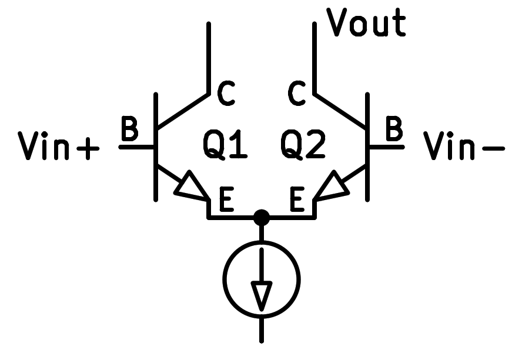

12. La part diferencial¶
El "diferencial par <https://es.wikipedia.org/wiki/amplifier_díferential#tecnolog%C3%ada>`__ està compost per dos transistors amb els dos emissors connectats a una font actual.
Quan la tensió a les bases és la mateixa, el corrent dels col·leccionistes continua sent el mateix en els dos transistors i, per tant, no amplifica el senyal.
Quan la tensió a la base d’un transistor és més gran que a la base de l’altre transistor, el corrent es desvia al transistor amb major tensió a la base i aquest senyal “diferencial” s’amplifica a la sortida.
Per tant, aquest amplificador només amplifica les diferències entre dues tensions d’entrada i no amplifica (rebutja) els canvis que són comuns a les dues tensions d’entrada.
Aquest amplificador (el PAR diferencial) s’utilitza a l’entrada dels amplificadors operatius molt populars, que es veuran més endavant.
{kind=link}

Esquema de dos transistors NPN en un muntatge diferencial.¶
El símbol connectat sota emissors transistos és un generador de corrent constant.
Simulació¶
A continuació, es pot veure la simulació d’un PAR diferencial amb dos transistors NPN. El senyal d’entrada diferencial té 25 mil·livolts d’amplitud màxima i el senyal de sortida té 1 volt d’amplitud màxima. Això significa que l’etapa té un guany de tensió a la sortida de 40 vegades la tensió d’entrada.
Exercicis¶
Dibuixa un esquema simplificat de dos transistors NPN que treballen en configuració parlamentària diferencial.
Dibuixa un esquema realista de dos transistors NPN que treballen en la configuració parlamentària diferencial.
Quin és l’objectiu principal que té un parroquial diferencial? Quins dispositius populars són els dispositius diferencials?
Modifiqueu a la simulació els dos generadors de tensió d’1 volts per lliurar 2 volts. Com canvia la sortida?
Si augmentem la tensió dels dos generadors a 3 volts, com canvia la sortida?
Què significa aquesta operació?
Realitza al Simulador de circuits una simulació d'un parlament diferencial amb transistors PNP. L’esquema serà com la següent figura:
Quines diferències operatives té el circuit anterior respecte al primer circuit simulat?
Quina gamma de tensió comuna accepta el circuit anterior a la seva entrada?
{kind=link}